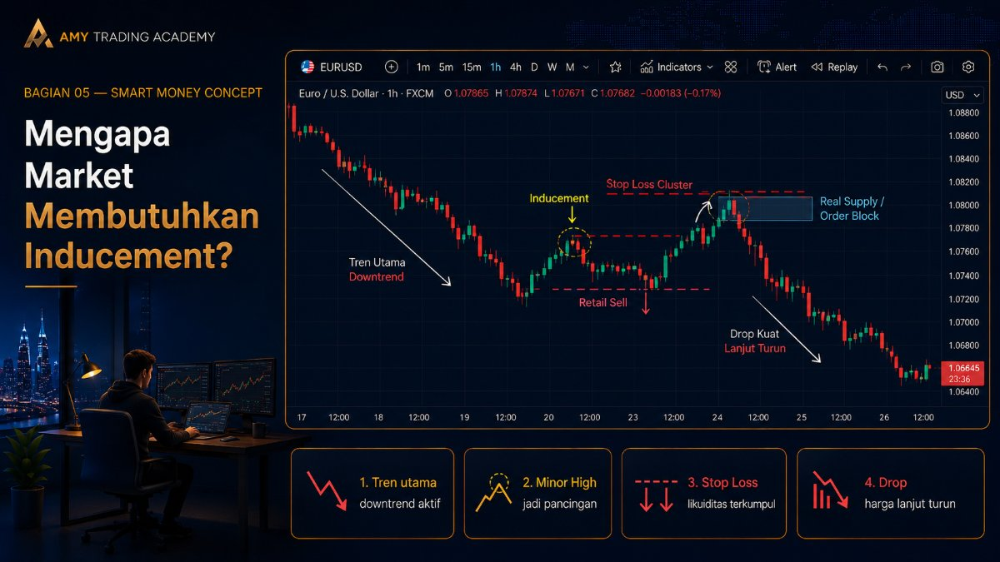
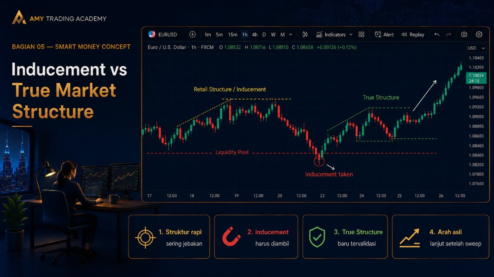
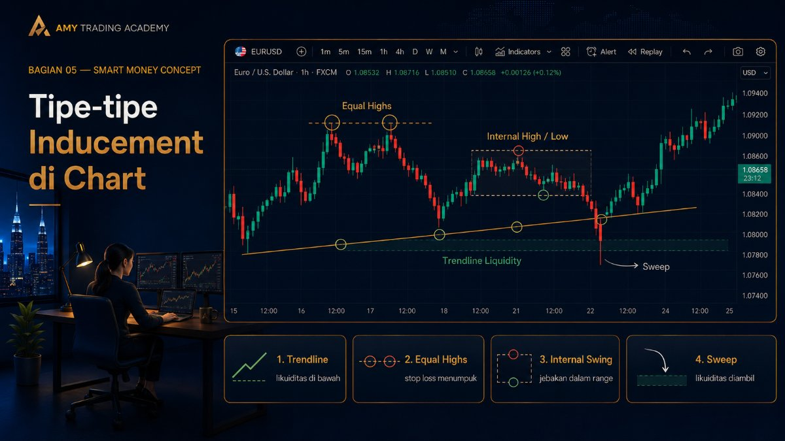
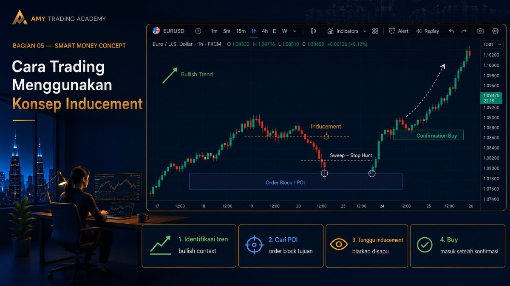

Inducement

Pernah dengar istilah Inducement (IDM)? Dalam bahasa Indonesia, Inducement artinya "bujukan" atau "pancingan". Di market, Inducement adalah jebakan atau pancingan yang sengaja dibuat oleh Smart Money untuk menggiring retail trader agar masuk ke pasar terlalu cepat (early entry) atau menaruh Stop Loss di tempat yang salah.
Kalau di bab sebelumnya kita membahas Stop Hunt (menyapu Stop Loss yang sudah ada), Inducement adalah cara Smart Money menciptakan kumpulan Stop Loss baru itu.
Mereka memancing kita dengan pola-pola yang kelihatan "sempurna" menurut buku-buku trading klasik, padahal sebenarnya itu cuma setup jebakan agar likuiditas terkumpul di satu area sebelum harga benar-benar bergerak ke arah yang dituju.
Mengapa Market Membutuhkan Inducement?
Ingat selalu hukum dasar pergerakan harga: Smart Money butuh bensin (likuiditas/Stop Loss) untuk bergerak.
Kadang-kadang, saat harga sedang trending, bensin di market mulai menipis. Untuk mendapatkan bensin tambahan, market harus "beristirahat" dan membuat struktur palsu untuk memancing trader ritel masuk.
Contoh sederhananya begini:
- Harga sedang dalam tren turun yang kuat (Downtrend).
- Tiba-tiba harga naik sedikit dan membuat sebuah Minor High (puncak kecil) yang terlihat seperti Resistance.
- Trader ritel yang melihat ini langsung berpikir, "Wah, harga udah mentok di Resistance, waktunya Sell nih!" Mereka pun pasang Sell dan menaruh Stop Loss tepat di atas Minor High tersebut.
- Padahal, Minor High itu hanyalah Inducement (pancingan).
- Setelah banyak retail trader masuk Sell, harga dengan cepat naik menjebol Minor High tersebut, menyapu semua Stop Loss (mengambil bensin), menyentuh area Order Block atau area suplai yang sebenarnya berada di atasnya, barulah setelah itu harga terjun bebas ke bawah.
Inducement vs True Market Structure

Salah satu tantangan terbesar bagi trader pemula yang belajar SMC adalah membedakan mana struktur market yang asli (True Structure) dan mana yang sekadar Inducement.
Struktur Ritel (Jebakan):
Biasanya sangat rapi. Trendline yang disentuh berulang kali, support yang mantul beberapa kali. Ini sering kali adalah Inducement. Semakin rapi dan mudah dilihat oleh semua orang, semakin besar kemungkinan itu adalah jebakan.
Struktur SMC (Asli):
Biasanya baru tervalidasi setelah Inducement diambil. Dalam aturan SMC yang ketat, sebuah Lower Low baru dianggap valid HANYA JIKA harga sudah naik dan mengambil Inducement (High terdekat). Kenapa? Karena pergerakan turun yang sehat butuh bahan bakar. Kalau dia turun tanpa ngambil bahan bakar (Inducement), kemungkinan besar turunnya tidak akan jauh, dan dia akan balik naik lagi untuk mencari bahan bakar.
Tipe-tipe Inducement di Chart

- Trendline Liquidity
Harga membentuk trendline naik yang disentuh 3-4 kali. Retail trader mengira ini adalah support kuat dan terus mem-buy di trendline. Smart Money membiarkan ini terjadi sampai likuiditas (Stop Loss) di bawah trendline menumpuk. Lalu BAM! Harga menembus trendline dengan tajam ke bawah. - Equal Highs / Equal Lows (Double Top / Double Bottom)
Trader klasik diajarkan untuk sell di Double Top. Padahal bagi Smart Money, Double Top adalah Inducement yang sempurna. Di atas Double Top ada lautan Stop Loss yang sangat gurih untuk disapu sebelum harga benar-benar turun. - Internal High / Low (Struktur Kecil di Dalam Range)
Saat harga sedang koreksi, ia sering membuat riak-riak kecil (minor swings). Riak terdekat ini sering dijadikan patokan Support/Resistance oleh trader di Timeframe kecil. SMC menyebut ini sebagai Internal Inducement yang pasti akan disapu sebelum harga mencapai Point of Interest (POI) utamanya.
Aturan Penting: Di mana ada POI (seperti Order Block atau FVG) yang TIDAK memiliki Inducement di dekatnya, POI itu berisiko tinggi gagal. Karena POI tersebut sendirilah yang akan menjadi Inducement untuk POI di atas/bawahnya!
Cara Trading Menggunakan Konsep Inducement

Jangan pernah trading di setup yang terlalu "bersih" atau belum mengambil pancingan apa pun.
Langkah-langkahnya:
- Identifikasi tren utama (misal: Bullish).
- Cari POI (Point of Interest) tempat kamu ingin Buy, misalnya sebuah Order Block di bawah.
- Sebelum harga sampai ke Order Block tersebut, pastikan market membentuk sebuah Inducement (minor low/support kecil).
- Tunggu sampai harga turun, menjebol Inducement tersebut (menyapu Stop Loss ritel), dan menyentuh Order Block kamu.
- Inilah saat yang tepat untuk mencari konfirmasi Buy.
Dengan menunggu Inducement diambil, probabilitas setup kamu akan meningkat drastis. Kamu tidak lagi menjadi orang yang menyediakan likuiditas (korban), tapi kamu trading tepat setelah likuiditas itu diambil oleh Smart Money. Kamu ikut menumpang ombak besar mereka.